早上不到 7 点就醒了。需要保持这种早睡早起的生物钟，因为考试日需要起得更早。早饭于 7 时 30 分开始提供：一块黄色奶酪，一块白色奶酪，一片火腿，一包黄油，一盒果酱，一段黄瓜，一块西红柿，面包、奶制品、麦片自取。面包有三种：普通的白面包、牛角包、填充咸奶酪的油条状酥皮面点。奶制品则有普通牛奶、植物基奶以及与昨晚味道相似的酸奶（但提供白砂糖）。麦片有玉米片、燕麦片、巧克力球。提供热的浓咖啡，可加奶，但纸杯容量很小，完全稀释不到 Caffe Latte 的水平，也不可加冰。但其实 Espresso 也不是苦到接受不了，适应其浓度及提神效果之后，回国甚至会精神不振。之后的每顿早餐都是这样。
Woke up before 7. Such early routine should be kept since we need to get up earlier on exam days. Breakfast started at 7:30 AM, with a piece of yellow cheese, a piece of white cheese, a piece of ham, a box of butter, a box of jam, a piece of cucumber, and a piece of tomato. Bread, dairy products and cereals are also provided. There are three type of bread: normal toast, crossiant, and a kind of long-shaped bread with salty cheese toppings and oil crisps. Dairy includes normal milk, plant-based milk for vegan options, and yoghurt with taste as yesterday (but sugar is provided). Cereals include corn and oak flakes, and cocoa crisp balls. There is hot coffee with optional milk, but the small paper cup makes it impossible to add as much milk as Caffe Latte. However, espresso is not too bitter to accept. Once adapted to its thickness and refreshing effects, it is likely to feel sleepy without it. The breakfast kept the same for the following days.
吃完早饭后为开幕式。IMC 的赞助者，包括华为、Pinely 以及另一家金融公司 Jane Street 分别进行了简短的宣讲。IMC 的主要负责人，伦敦大学学院 (UCL) 的 John E. Jayne 教授进行了发言，还有人试图讲解难以快速消化（即使对大部分当时在场的人也如此）的数学前沿知识与研究成果。在开幕式的报告厅外同样有华为和 Pinely 摆摊；我达成了转陀螺持续 20 秒的纪录。
After breakfast was the opening ceremony. There were short presentations by the sponsors of IMC, including Huawei, Pinely, and Jane Street. The main person in charge of IMC, Professor John E. Jayne of University College London (UCL), gave a speech, and there was another person making a short lecture on some mathematical theories and findings, although it was proven to be very hard to understand quickly, even for most of those "math brains". There were stands again by Huawei and Pinely outside of the venue of the opening ceremony, and I managed to keep a metal top spinning for 20 seconds.
我们跟随着带队老师去了考场，以熟悉考试地点。从生活区到考场有不同的路径，老师指引的走法并非最短，但是最容易记住：我一般记为“左右左左”，即在生活区最北端先左转进入主路，走到尽头的丁字路口右转后不久进入铺砌石砖的步行区（这是该市最繁华的商业街），走到左边有多层商场、前面有酒吧、直行的路变窄的路口时左转，再走到一个不规则路口（类似于纽约时代广场）时转向左前方，即可看到 AUBG 的教学楼。观察了一下，考场内有空调！
We were led by the team leader to the exam venue to familiarise the route. There are different routes, and the team leader did not choose the shortest one, but the easiest one to memorise. I recite it as "Left, Right, Left, Left", which is to turn left first to enter into the main road at the northernmost of Skaptopara, turn right once reaching the T-junction at the end, a while after which a pedestrian zone with stone pavements should be entered (which is the most lively area of the city), and to turn left at a junction with a mall on the left, and bars and narrower path on the front, and finally turn to the left-front to see the building of AUBG at a irregular junction shaped like Time's Square in New York City. Fortunately, there are air conditioners at exam venues!
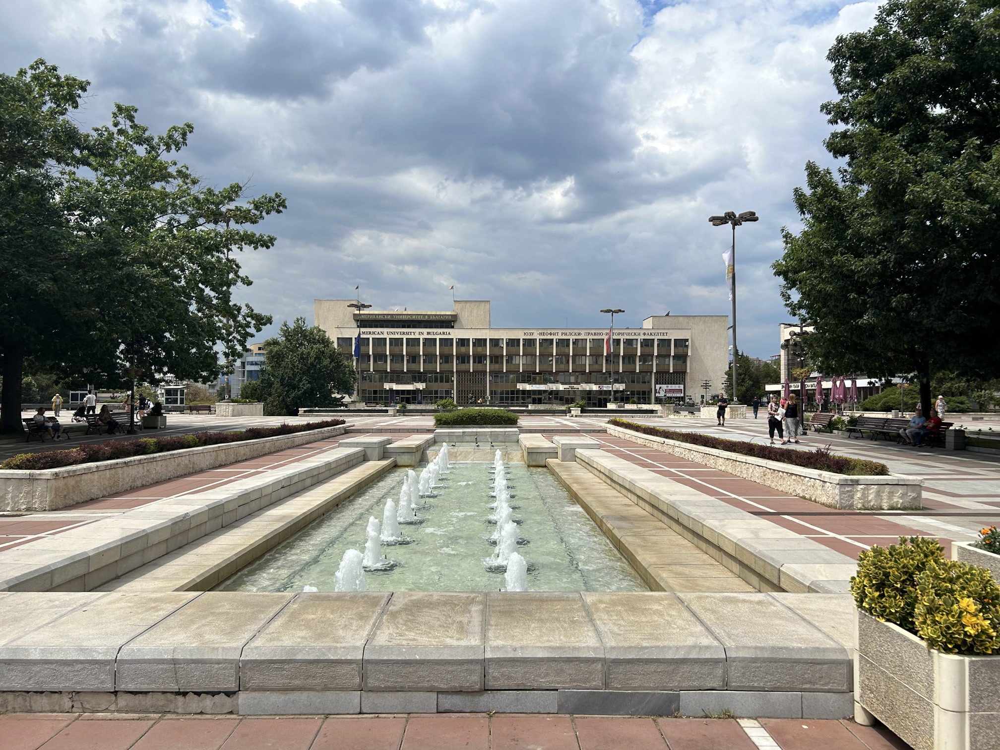
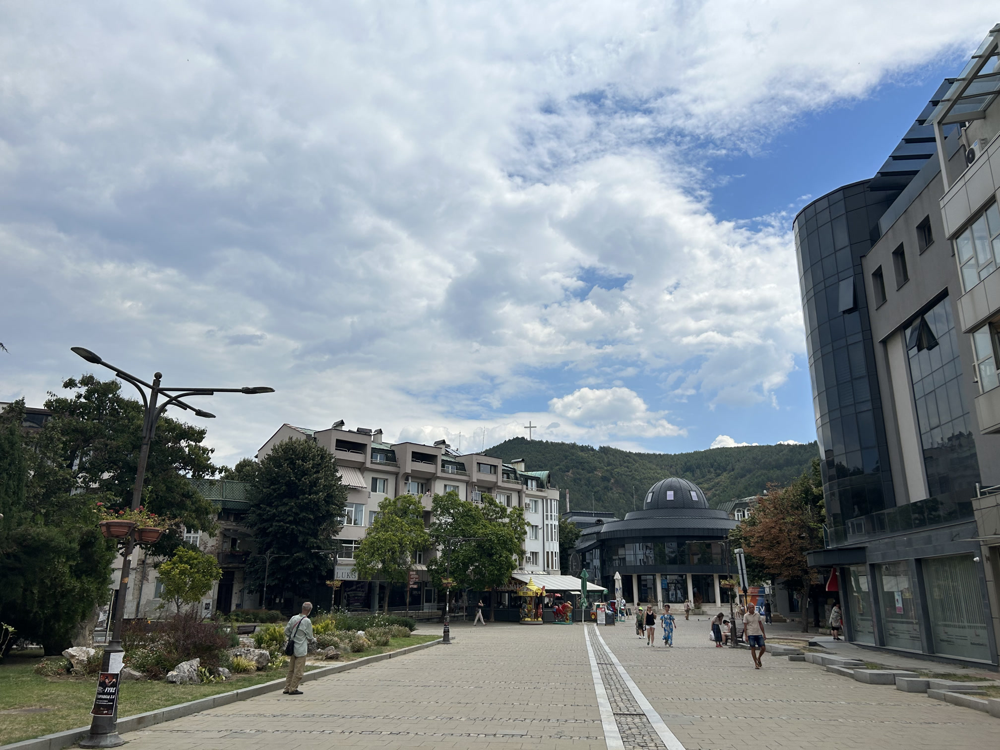
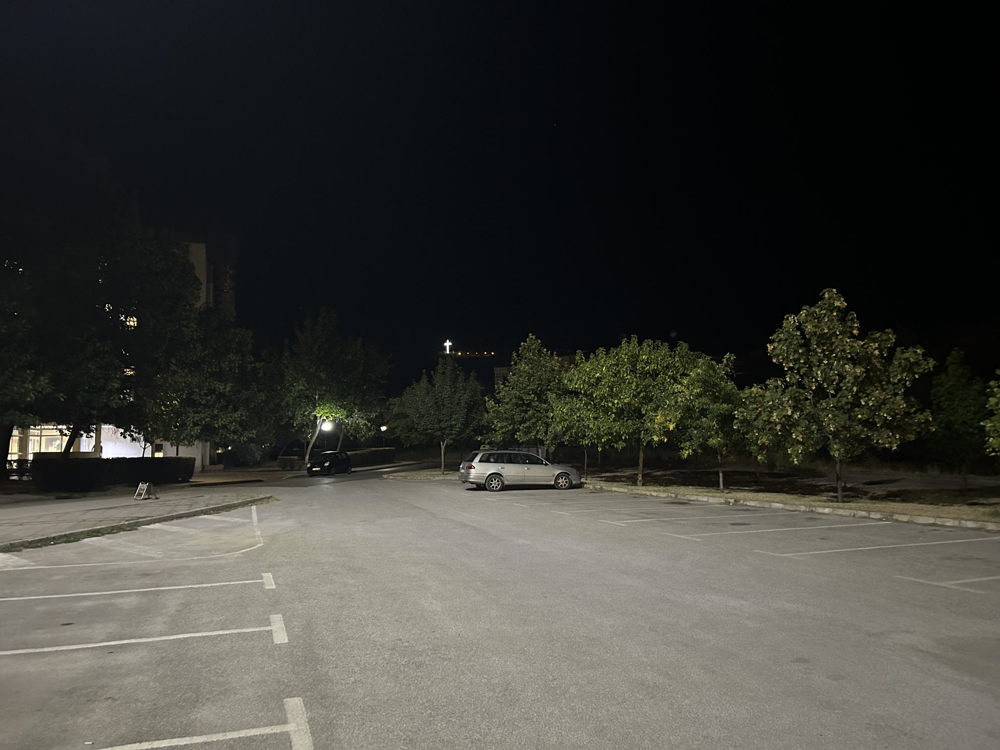
我们原路返回了生活区（大约需要 20 分钟），发现午饭全是素食。吃完午饭后，带队老师与我们告别，因为他要参与命题及试题讨论，要忙到很晚。即使有时间再见面，出于保密原则，考试结束前也不能讨论任何数学问题。临走前，老师给了我们好成绩的祝愿，但同时也说：放轻松，最重要的是享受考试的过程。老师们都看到了大家准备的努力与积极性，这比最终的成绩更重要。即使考零分也没有关系，关于墓地的话只是玩笑！
Same route back to Skaptopara (approximately 20 minutes), we found the lunch was all vegetarian. The team leader said goodbye to us after lunch, since he should participate in the assignment and discussion of exam problems. Even if meeting again before the exam ended, any mathematical problems should not be discussed due to secure principle. Although the team leader wished everyone a good result, he also said, take it easy, and enjoy the exams first. We have all seen your time and effort spent on the preparation, and you are happy about it, which is the most important instead of the results. You don't need to worry, even if you got zero. Any word about those graves is only a joke.
即便明天就要考试，我仍然拾起了我的铁道考察的老本行。在抵达当天，我就发现生活区的南边有一条铁路。下午两点钟，我一边向南走着，一边在保加利亚铁路 (BDZ) 官网上查看布拉戈耶夫格勒火车站的时刻表，发现 14 时 20 分有一班车要驶离布拉戈耶夫格勒前往索非亚。然而离生活区最近的铁道路口在布拉戈耶夫格勒——索非亚区间之外，因此想要拍车，还须向西近 1 公里前往布拉戈耶夫格勒火车站。
Despite the exam tomorrow, I picked up my hobby of railway exploration. On the day of arrival, I had found there is a railway southward to Skaptopara. Thus at around 2 PM, I checked the timetable of Blagoevgrad Railway Station on the official website of Bulgaria Railway (BDZ) while walking toward the south, and found there is a train to depart at 1420 from Blagoevgrad to Sofia. However, the nearest railway crossing is not in the section from Blagoevgrad to Sofia, and thus I should walk nearly 1 kilometer west to go to Blagoevgrad Railway Station to go trainspotting.
我及时到了火车站：车站用中国标准来看极其简陋，没有室内的候车大厅，也没有跨站台的天桥，站台和雨棚也年代久远。靠近车站建筑的站台的墙边有一台自动咖啡机，除了售卖价格更贵以外和宿舍一楼公共区域的咖啡机一模一样：供应三种咖啡豆的小杯热咖啡、热牛奶和热巧克力，可选加糖量。宿舍一楼的咖啡售卖价格在 0.60 至 1.20 LV 不等，即使按火车站的价格，甚至也便宜过国内的瓶装咖啡。
I reached the railway station in time. That is a very rugged station if using standards of China: no indoor departure hall, no bridge for passengers crossing rail tracks, and the platforms together with roof are very old. There is a coffee vending machine on the wall of the platform nearby the station building exactly the same as the machine on the ground floor of the Skaptopara II Hall, except higher prices. The machine sells hot milk, chocolate, and coffee with options of three types of coffee beans, with adjustable sugar amount. The prices at the dormitory hall range from 0.60 to 1.20 LV, and even at the railway station, the coffee is cheaper than most bottled coffee in China.
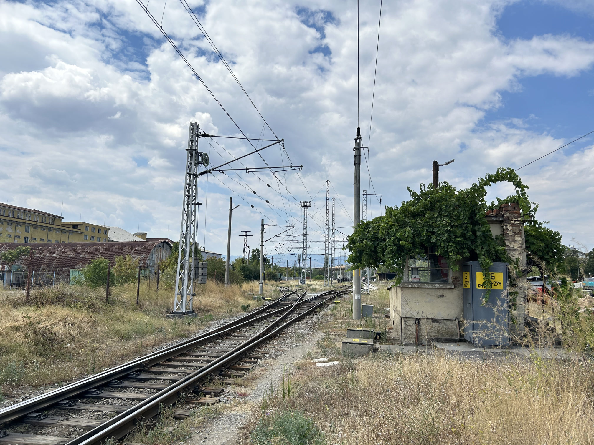
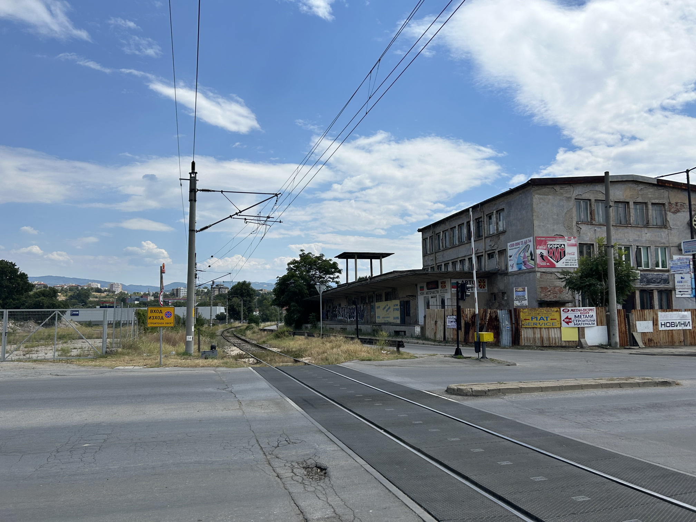
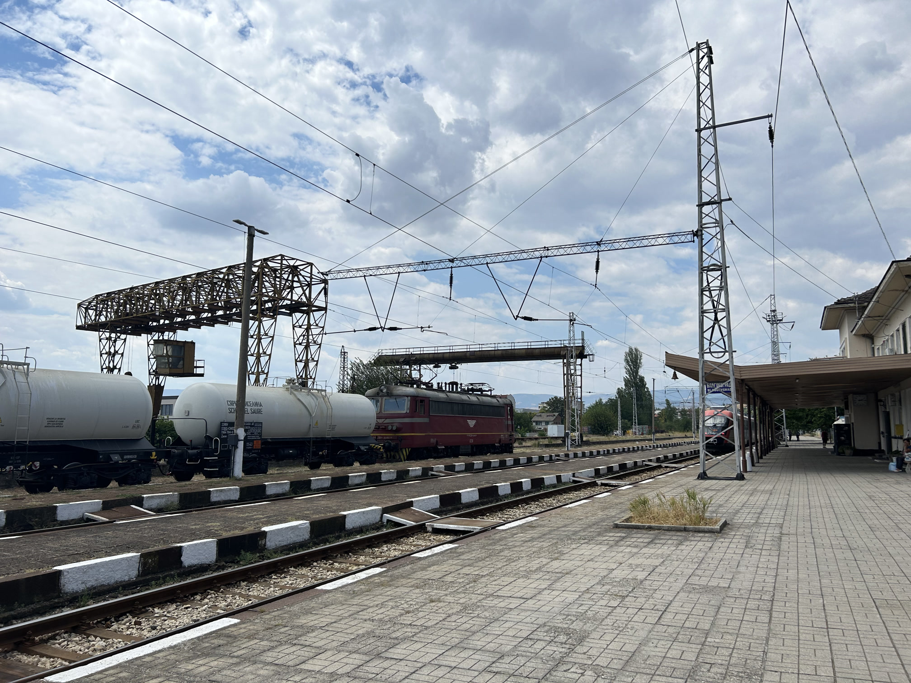
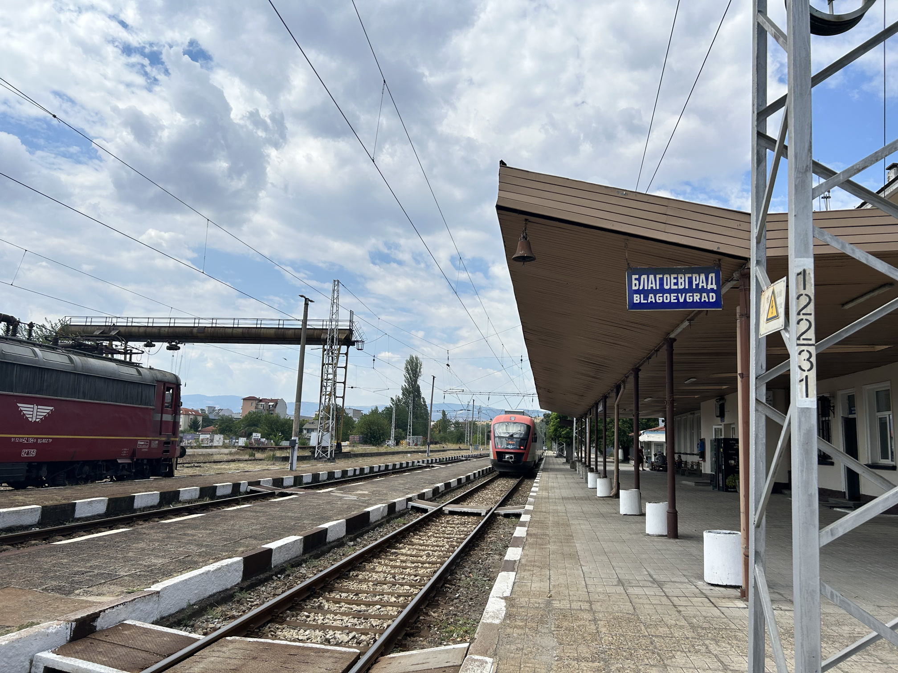
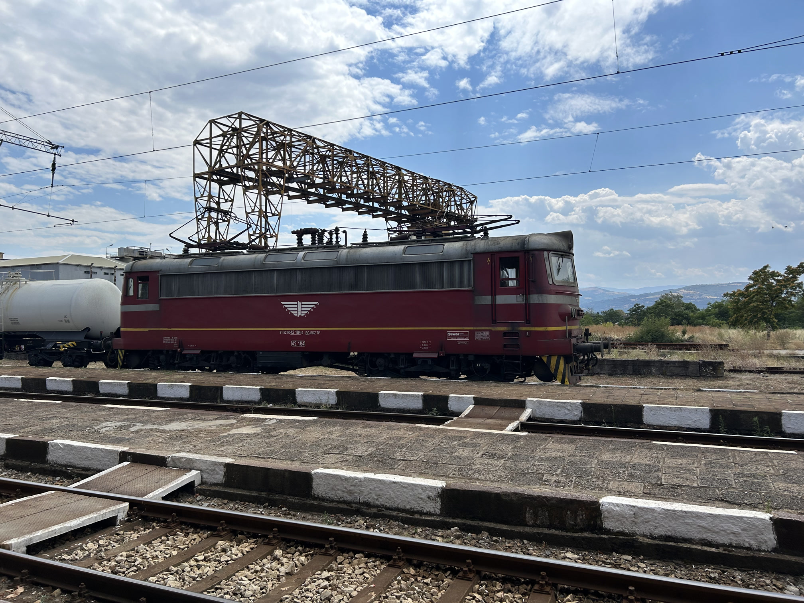
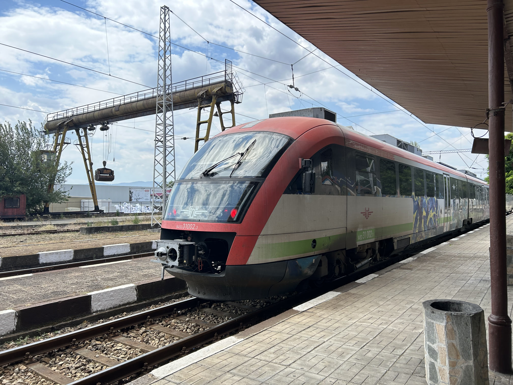
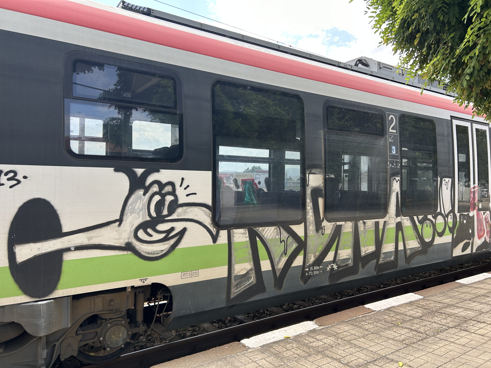
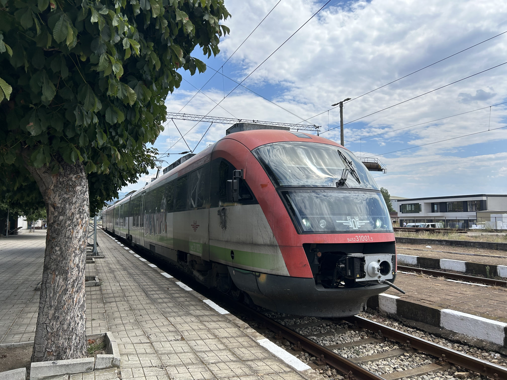
地区列车 REG 50112 于 14 时 20 分发车，将于 17 时 05 分到达索非亚，中间停靠 30 站，用时 2 小时 45 分钟，比抵达时的大巴要慢一个小时。可能地区列车需要照顾沿线小站的客流，但即使是最快的车也需要 2 小时 5 分钟（ICF 5612，中间只停靠 4 站），仍然没有对公路客运的足够竞争力。
The regional train REG 50112 departs at 1420, and is scheduled to reach Sofia at 1705, via-stopping at 30 stations. The whole journey would take 2 hours and 45 minutes, one hour slower than the coach on the day of arrival. This may because it should attract passengers at intermediate stations as a regional train, but even the fastest train would cost 2 hours and 5 minutes (ICF 5612, only via-stopping 4 stations), whose power is thus not enough to compete with road transport.
考察完铁道后，我回到了生活区，进入了焦急的等待环节。
I returned back to Skaptoparas after trainspotting, and had been waiting for tomorrow anxiously.
明天就要决战了，明天就要决战了！你偷的懒、摸的鱼都会展现得淋漓尽致！但在如此紧张的心情下，我并未“临阵磨枪”——不适用于数学竞赛。当晚我与慕尼黑大学 (LMU) 的几位对手（朋友？）玩了两局桌游后，就回宿舍睡觉了。
The real war is tomorrow; the real war is tomorrow! You will expose all of your laziness and lack of preparation vividly! Despite such anxiety, I did not review anything for rescue, which is useless for mathematical competition. I played two rounds of board game with some rivals (friends?) from Ludwig-Maximilians-Universität München (LMU), and then went back the dorm and fell asleep.
TOP | 1 | 2 | 3 | 4 | 5 | 6 | 7